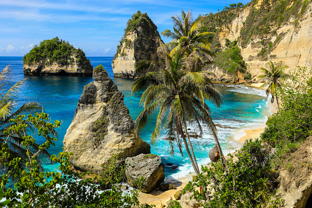
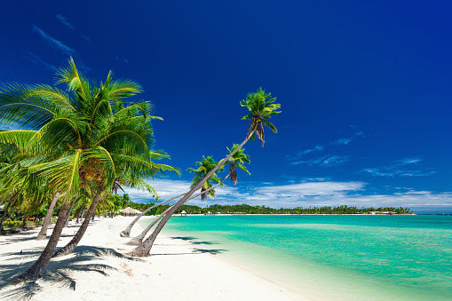
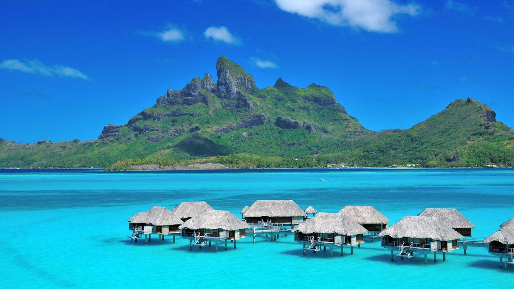

Andaman
The Andaman Islands are an Indian archipelago in the Bay of Bengal. These roughly 300 islands are known for their palm-lined, white-sand beaches, mangroves and tropical rainforests. Coral reefs supporting marine life such as sharks and rays make for popular diving and snorkeling sites. Indigenous Andaman Islanders inhabit the more remote islands, many of which are off limits to visitors.

Bali
Bali is a province of Indonesia and the westernmost of the Lesser Sunda Islands. East of Java and west of Lombok, the province includes the island of Bali and a few smaller offshore islands, notably Nusa Penida, Nusa Lembongan, and Nusa Ceningan to the southeast.

Maldives
The Maldives, officially the Republic of Maldives, is an archipelagic state in South Asia, situated in the Indian Ocean. It lies southwest of Sri Lanka and India, about 750 kilometres from the Asian continent's mainland.

Fiji
Fiji, country and archipelago in the South Pacific Ocean. It surrounds the Koro Sea about 1,300 miles (2,100 km) north of Auckland, New Zealand. The archipelago consists of some 300 islands and 540 islets scattered over about 1,000,000 square miles (3,000,000 square km).
